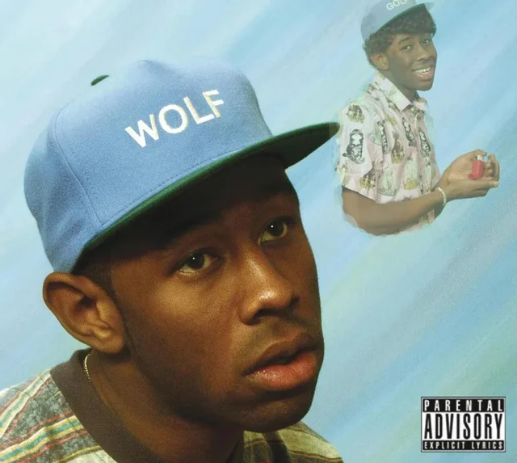

Estreno: 2013 | Lugar: Camp Flog Gnaw
Wolf es el tercer álbum de Tyler. Aquí conocemos la historia de Wolf Haley, Sam y Salem en el campamento. Es un disco mucho más melódico, con influencias de jazz y soul, pero manteniendo esa actitud rebelde.